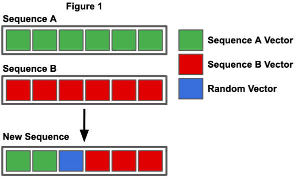

Below is a simulation which is using a genetic algorithm to allow the white rectangles to reach the red target. Scroll down to find more information about how this works and to edit the parameters of the simulation.
A genetic algorithm is a meta-heuristic machine learning algorithm which makes use of the ideas of natural selection, generations and survival-of-the-fittest. A meta-heuristic algorithm means that it can be applied to a range of different of problems and that is true of genetic algorithms as the same algorithm can be used for a number of different environments and problems. So how does a genetic algorithm work? A genetic algorithm can be broken down into 3 main steps: generation, testing and selection. The first stage is to randomly generate a population for the first generation where each member has a random set of "DNA". This "DNA" decides what action each member of the population will do. Once the population has been generated they are placed in to the environment tested against the given problem, then depending on how close each member of the population is to the desired to desired result depends of good of a fitness it receives. The fitness is a measure of how good a member performs and for this example a higher fitness is better however this can vary from program to program. The final major stage in a genetic algorithm is selection, this is when the population for the following generation is created. To allow the population to develop the stronger performing members of society need to be separated from the weaker members of society, this can be done by making the stronger members more likely to "reproduce" in to the next generation. This "reproduction" happens through something called crossover function. Typically two members of the population, with an increasingly likelihood that they are strong members, are chosen. A crossover function takes in the genomes (all of the "DNA") from both of the random members and then it crosses the genes over to form a resultant genome which then can be used to create a new member for the following generation. There are many ways that the genomes can be crossed over to create the new genome but some common methods are: to take the first half of the first genome and take the second half of the second genome, take the first gene from the first genome and then take the second from the second genome and this continues until the end of the genome is reached, chose a single point on the in the genome, called the crossover point, and take all the genes before the crossover point from the first genome and take all genes after the crossover point from the second genome. To allow new methods and strategies to develop amongst the generation there needs to be a way that new, random, genes can come about. This happens during the crossover function where there is a chance that a given gene will mutate for the next generation. In addition to this the model can have an adaptive mutation chance, this means that the probability that a gene will mutate will change as the generations go on and this is advantageous as initially it is important for the population to be able explore lots of random strategies whereas later in the evolutionary process it is better for the genome to mutate less to allow the population to refine a single strategy. In conclusion that is how a typically genetic algorithm would work however some of the aspects may change based on the desired result and the environment the algorithm is going to be used in.
The advantages of using a genetic algorithm compared to other machine learning algorithms are: they can easily be applied to lots of different problems with little modification, genetic algorithms can be better at finding the global optimum solution compared to just finding the local optimum, it can be computed in parallel which can allow the solution to be calculated faster and with the idea of random mutations it allows for lots of possible solutions to be explored.
The disadvantages of using a genetic algorithm compared to other machine learning algorithms are: a fitness function needs to be carefully created to reflect the problem otherwise the results will be inaccurate, there are lots of parameters such as population size, mutation rate, genome length and crossover functions which can affect results so it can be time consuming to adjust each parameter to get the optimum results and if the problem is complex then it can take a long time for the algorithm to find an optimum solution.
Firstly, if you are unfamiliar with how a genetic algorithm works I recommend reading the "What is a genetic algorithm?" section before reading this. This simulation is written in JavaScript along with the p5.js library for the visuals.
In this simulation I am going to refer to each member of the population as a cell and I am going to refer to each cell's "DNA" as the sequence. This first stage of the genetic algorithm in the simulation is to generate a population of size, p. Each cell is given a random sequence of length s and the sequence really is is an s length array of 2D vectors.
Then every frame, the next vector in the sequence is added to the velocity of the cell and then the velocity is added to the (x,y) coordinate values of that cell. After the position of each cell has been updated, the location of that cell is checked to see if it has crashed in to a barrier, a wall or if it has made it to the target. All the barriers in a certain environment are stored as a 1D array of barrier objects and each object has the attributes: x coordinate, y coordinate, width and height. Since all the environment obstacles are made up of rectangular barriers it is possible to iterate through all of the barriers and check if the (x,y) is within any of the barrier rectangles. It is a lot simpler to check if the cell has crashed in to the walls as, as long as the cells x is between 0 and the width of the environment and the cells y is between 0 and the height of the environment then we know the cell hasn't crashed in to the wall. The target is a circle so to check if the cell has reached the target then all that needs to be done is to check if distance from the cell to the center of the target is equal to or less than the radius of the circle, and if it is then we know the cell has reached the target. If the cell has crashed or reached the target then its position isn't updated for the rest of the generation. Every frame the frame counter is incremented by 1 so once the frame counter is equal to the length of the cells' sequence that is the end of generation.
The next step is to calculate the fitness values for each cell, there are 3 categories that the cells can be placed in to depending on how well they performed in the environment: the ones who crashed, the ones who didn't crash but didn't make it to the target and those who made it to the target. The formula to calculate the fitness for the cells that made it is f = 1+(1/frames taken to reach the target). It is important that the number of steps taken to reach the target is taken in to consideration as the cells that reach the target faster/in less frames are stronger and therefore should receive a higher fitness compared to the slower cells. The formula to calculate the fitness for the cells that crash is f = (1/distance from the target)*crash value. By doing 1 divided by the distance means that the higher/further the distance then lower the fitness will be. The crash value is a number between 0 and 1 where if it is 0 the cells that crash get a fitness value of 0 and if it is 1 then the cell will receive the same fitness as a cell that got to the same distance away from the target but didn't crash. This value is significant as it controls how detrimental crashing is to a cells chance at passing its sequence on to the next generation. The final fitness formula is for the cells that don't crash but also don't make it to the target, this is simply calculated by the formula f = 1/distance from the target, which as you can see is very similar to the previous formula but not identical. The final part of this step is to scale the cells fitness value between 0.01 and 1 (this will be explained later).
The next step of the simulation is to generate a new gene pool for the next generation to choose from, this is done by taking cells' fitness value and then multiplying it by 100 and adding that number of copies of that cells sequence to the gene pool. This sounds more complicated than it is so here's an example: let's imagine that cell A has a fitness of 0.09, we multiply this by 100 to get 9, this means 9 identical copies of cell A's sequence is added to the gene pool. The higher the cells fitness the more copies of that sequence will be added to the gene pool thus making that sequence more likely to be chosen in the next stage. The reason the fitness value for the cell is scaled between 0.01 and 1 is so that the weakest cell has only 1 copy of its sequence in the gene pool while the strongest cell has 100 copies of its sequence in the gene pool. This is repeated for all cells in the current generation.
Once this has been done we move on to creating the following generations population, this is done by choosing 2 random sequences from the gene pool. To make the sequence for the new cell a crossover function is used where the first half of the new cell's sequence is copied from the first half of the first random sequence and the second half of the new cells sequence is copied from the second half of the second random sequence(as seen in the image below).

During the crossover function is where the concept of mutations take effect, for every vector copied from one sequence to another there is a probability that it won't be copied and instead it will become a new random vector. The probability of a mutation is calculated by the formula probability = max(mutation rate*(mutation decay^generation), minimum mutation rate). The mutation rate is an initial parameter which is used as a base mutation rate where all the other mutation rates are derived from, the mutation decay is a number between 0 and 1 and this represents how much the probability of a will decrease from one generation to the next. For example if the mutation decay was equal to 0.8 this means the that the probability of mutation on the second generation is 0.8 times (or 80%) the probability of mutation on the first generation and the probability on the third generation is a further 0.8 times (or 80%) the probability of mutation on the second generation so on and so on. As the generation number increases the probability of mutations decreases and it will get to a point where the chance of a mutation is so low that in a population of 200 cells a single mutation might only occur once every 100 generation this then makes it difficult for the cells to even fine-tune existing strategies so this is why there is the minimum mutation rate. If the calculated mutation rate drops below the minimum mutation rate then the probability is just set to the minimum mutation rate. This is done so that as the simulation progresses the existing strategies can be fine-tuned as the chance of new mutations and strategies arising is lower hopefully allowing the optimum solution to be found. This process of choosing 2 random sequences from the gene pool, crossing them over and then creating a new cell is repeated until a new population is created of size p.
Then next generation population is tested in the environment and the cycle repeats allowing the population to improve each generation until the optimal solution is found.
If you wish to look through the source code right-click then press page source where you should then be able to navigate to "script.js" which is all the code for the genetic algorithm.
Population Size (p) - This is the number of cells in each generation, this remains constant for each generation. With more cells in the population there is a higher chance that beneficial mutations will occur allowing the population to develop and improve faster however with a larger population size this requires more computing power so setting this too high can cause the simulation to slow down meaning it takes longer to find the solution. Changing this will cause the simulation to reset back to the beginning.
Frame Rate - This is the target number of frames per second for the simulation, if there is too little computing power then the actual frames per second will be lower than this number.
Sequence Length (s) - This is the number of 2D vectors within the sequence of each cell. If this is too low then the cells will never be able to reach the optimal solution, if this is too high then this could result in the algorithm optimising unnecessary values or it could increase the time taken to find the optimum and instead end up finding a suboptimal solution. Changing this will cause the simulation to reset back to the beginning.
Mutation Rate (mr) - This is the starting probability that a given vector is randomised during the crossover function. This will always be between 0 and 1 where the higher it is the more likely a mutation will occur. Changing this will cause the simulation to reset back to the beginning.
Mutation Decay Rate (md) - This is how much the mutation rate will decrease by from one generation to the next. This is is between 0 and 1 and, for example, if the mutation decay rate was 0.75 this means that the new probability of a mutation is 0.75 times (or 75%) of the probability of mutation in the previous generation.
Minimum Mutation Rate (mm) - This is smallest the probability of a mutation can be for example if the calculated probability is 0.04 but the minimum mutation rate is 0.1 then the probability of mutation will be set to 0.1.
Show Path - If this is selected then a line will be drawn behind behind the cells so you can see the path it has taken to get to its current location. This is useful as it allows the general trend of the population to easily be visualized.
Barrier Type - This allows you to change the environment that the cells are placed in. If you make the environment more more difficult and the cells are unable to complete it try increase the sequence length and vice versa if you make it easier, decrease the sequence length. Changing this will cause the simulation to reset back to the beginning.